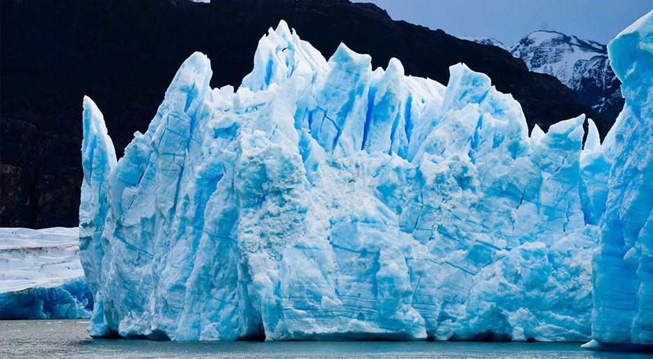

<!DOCTYPE html>
<html>
<head>
    <meta charset="utf-8">
    <meta http-equiv="X-UA-Compatible" content="IE=edge">
    <meta name="viewport" content="width=device-width, initial-scale=1">
    <meta http-equiv="Content-Type" content="text/html; charset=UTF-8"/>
    <meta name="robots" content="index, follow"/>
    <meta name="keywords" content="Морские перевозки на Крайний Север"/>
    <meta name="description" content="Арктик-консалтинг-сервис"/>
    <link href="https://fonts.googleapis.com/css?family=Roboto+Condensed:400,700,300|Roboto:300,400,700|Open+Sans:400,600&subset=latin,cyrillic"
          rel="stylesheet" type="text/css">
    <link href="styles.css" type="text/css" data-template-style="true" rel="stylesheet"/>
    <link href="template_styles.css" type="text/css" data-template-style="true" rel="stylesheet"/>
    <link href="addition.css" type="text/css" data-template-style="true" rel="stylesheet"/>


    <script type="text/javascript"
            src="./template_2592aedd5b68008cb8462b4204dd997a.js"></script>


    <title>Артик консалтинг сервис</title>
    <!--[if lt IE 9]>
    <script src="https://oss.maxcdn.com/html5shiv/3.7.2/html5shiv.min.js"></script>
    <script src="https://oss.maxcdn.com/respond/1.4.2/respond.min.js"></script>
    <![endif]-->

    <link rel="shortcut icon" type="image/ico" href="/favicon.ico"/>
    <link rel="apple-touch-icon" sizes="57x57" href="/apple-touch-icon-57.png">
    <link rel="apple-touch-icon" sizes="72x72" href="/apple-touch-icon-72.png">
    <link rel="apple-touch-icon" sizes="114x114" href="/apple-touch-icon-114.png">
    <link rel="apple-touch-icon" sizes="144x144" href="/apple-touch-icon-144.png">
</head>
<body>
<div class="wrapper news">
    <header>
        <nav class="navbar navbar-default" role="navigation">
            <div class="container">
                <div class="navbar-header">
                    <button type="button" class="navbar-toggle collapsed"
                            data-toggle="collapse" data-target="#navbar"
                            aria-expanded="false" aria-controls="navbar">
                        <span class="sr-only">Toggle navigation</span>
                        <span class="icon-bar"></span>
                        <span class="icon-bar"></span>
                        <span class="icon-bar"></span>
                    </button>
                    <a class="navbar-brand" href="/" alt="Арктик консалтинг сервис">
                        <i class="icon-logo"></i>
                        <!---->
                    </a>
                </div>
                <div id="navbar" class="collapse navbar-collapse">

                    <ul class="nav navbar-nav navbar-right">

                        <li>
                            <a href="/about/">О компании</a>
                        </li>
                        <li class="active">
                            <a href="/services/">Услуги</a>
                        </li>
                        <li>
                            <a href="/flot/">Флот</a>
                        </li>
                        <li>
                            <a href="/services/port/">Порт</a>
                        </li>
                        <li>
                            <a href="/media/">Медиа</a>
                        </li>
                        <li>
                            <a href="/contacts/">Контакты</a>
                        </li>
                        <li class="hidden-xs hidden-sm">
                            <div class="top-worktime">
                                <span>Пн-Пт: 9:00 - 18:00</span><br>(8182) 65 75 85
                            </div>
                        </li>
                        <li class="hidden-xs">
                            <a href="/search/index.php" class="search-button" title="Поиск"><i class="icon-search"></i></a>
                        </li>
                    </ul>
                    <div class="search-form">
                        <div class="container">
                            <form class="navbar-form navbar-left" action="/search/index.php" role="search">
                                <input class="form-control" name="q" value="" maxlength="50" type="text"
                                       placeholder="Поиск" autocomplete="off">
                                <button type="submit" name="s" class="btn btn-default" style="display: none;">Поиск
                                </button>
                            </form>
                            <ul class="nav navbar-nav navbar-right">
                                <li><a href="#" class="close-button" title="Закрыть">x</a></li>
                            </ul>
                        </div>
                    </div>

                </div><!-- /.nav-collapse -->
            </div><!-- /.container -->
        </nav>
    </header>
    <section class="page-head">

        <div class="container">
            <div class="row">
                <div class="col-md-8">
                    <div class="page-head__header">
                        Услуги
                    </div>
                </div>
            </div>
        </div>
    </section>

    <section class="navigation">
        <div class="container">
            <div class="header-menu">

                <ul class="nav nav-pills">
                    <li class="active">
                        <a href="/services/">Все новости</a>
                    </li>
                </ul>


                <div class="clear"></div>
            </div>
        </div>
    </section>

    <section class="content">

        <div class="container-fluid b-block">
            <div class="container">
                <div class="header-post">
                    <h1 class="header-post__title">Таянье льдов северных морей как угроза всему миру</h1>
                    <ul class="header-post-tags">
                        <li class="header-post-tags__title">Теги:</li>
                        <li class="header-post-tag"><a href="#">Арктика,</a></li>
                        <li class="header-post-tag"><a href="#">Катаклизмы,</a></li>
                        <li class="header-post-tag"><a href="#">Европа,</a></li>
                    </ul>
                </div>

                <div class="header-post-share">
                    <div class="header-post-share__col">
                        <div class="header-post-share-social">
                            <div class="header-post-share-social__title">Поделиться<br>новостью:</div>
                            <div class="header-post-share-social__body">
                                <div class="social-list">
                                    <div class="social-item"></div>
                                    <div class="social-item"></div>
                                    <div class="social-item"></div>
                                    <div class="social-item"></div>
                                    <div class="social-item"></div>
                                </div>
                            </div>
                        </div>
                    </div>
                    <div class="header-post-share__col">
                        <a href="#" class="header-post-share__btn"><i class="icon-email"></i>Email</a>
                        <a href="#" class="header-post-share__btn"><i class="icon-pdf"></i>Pdf</a>
                        <a href="#" class="header-post-share__btn"><i class="icon-print"></i>Печать</a>
                    </div>
                </div>


                <div class="b-text">
                    <p>
                        Выводим сюда аннотацию с предыдущей страницы. Катастрофические наводнения последних лет в Европе вызваны таянием льдов северных морей.Каждое лето все последние годы на северную и восточную Европу проливаются затяжные дожди, приводящие к настоящим наводнениям. Реки выходят из берегов, затапливая целые города. И виной тому – глобальное потепление, вызывающее таяние льдов Арктики.
                        На самом деле Земля не является единственной планетой, на которой существует смена времен года. Для того чтобы это происходило, планета должна иметь орбиту и наклон оси вращения. На Земле полушарие, получающее больше прямого солнечного света, окутано летом, а полушарие с меньшим количеством солнечного света – зимой. Нам, людям, даже сложно представить, какой была бы жизнь без смены времен года. Времена года заставляют нас менять гардероб, следить за прогнозом погоды, а годовые температурные циклы отвечают за многие процессы на Земле. Однако похожи ли времена года на других планетах на земные?
                    </p>

                    <figure>
                        
                        <figcaption>Заглавная фотография (c) Автор фотографии, Ну или подпись к фото если надо...</figcaption>
                    </figure>

                    <p>Быстрое снижение площади арктических льдов наблюдается уже достаточно давно. За последние 10 лет она сократилась на 500 тыс. кв. км.</p>

                    <p>Некоторые последствия этого процесса исследовал британский математик Джеймс Скрин (James Screen), который связал это таяние с резким ростом уровня осадков в европейских странах. «Компьютерное моделирование показывает, что таяние северных льдов воздействует не только на природу самой Арктики, но имеет широкие последствия для жителей всего континента», – говорит ученый.</p>

                    <p>В работе Джеймса Скрина показано, что сокращение ледового покрытия приполярных широт ведет к перераспределению мощных потоков высотных ветров. Прежде эти потоки проходили между Шотландией и Исландией, унося влажные циклоны дальше на север. Но с некоторых пор они сместились южнее, так что дождевые фронты оказываются прямиком над Великобританией и северными европейскими странами.</p>

                    <p>При том, что здесь дождей оказывается с избытком, юг континента и Средиземноморский бассейн начинают испытывать недостаток влаги. Но даже Европой это влияние не ограничивается: ученый продемонстрировал, что перераспределение воздушных потоков на востоке Атлантики меняет погоду даже в Северной Америке.</p>

                    <p>Автор подчеркивает, что его работа ничего не говорит о том, продолжится ли таяние арктических льдов в будущем, и как активно оно будет протекать. Но можно предположить, что если оно не замедлится, то Европе стоит ждать новых летних ливней – и новых наводнений.</p>

                    <div class="b-grid">
                        <div class="b-col-6">
                            <figure>
                                
                                <figcaption>Заглавная фотография (c) Автор фотографии, Ну или подпись к фото если надо...ИЛи можно и без надписей, как хотите так и пойдет)</figcaption>
                            </figure>
                        </div>
                        <div class="b-col-6">
                            <figure>
                                
                                <figcaption>Заглавная фотография (c) Автор фотографии, Ну или подпись к фото если надо...ИЛи можно и без надписей, как хотите так и пойдет)</figcaption>
                            </figure>
                        </div>
                    </div>

                    <p>Быстрое снижение площади арктических льдов наблюдается уже достаточно давно. За последние 10 лет она сократилась на 500 тыс. кв. км.</p>

                    <p>Некоторые последствия этого процесса исследовал британский математик Джеймс Скрин (James Screen), который связал это таяние с резким ростом уровня осадков в европейских странах. «Компьютерное моделирование показывает, что таяние северных льдов воздействует не только на природу самой Арктики, но имеет широкие последствия для жителей всего континента», – говорит ученый.</p>

                    
                    <p>Быстрое снижение площади арктических льдов наблюдается уже достаточно давно. За последние 10 лет она сократилась на 500 тыс. кв. км.</p>

                    <p>Некоторые последствия этого процесса исследовал британский математик Джеймс Скрин (James Screen), который связал это таяние с резким ростом уровня осадков в европейских странах. «Компьютерное моделирование показывает, что таяние северных льдов воздействует не только на природу самой Арктики, но имеет широкие последствия для жителей всего континента», – говорит ученый.</p>

                    <div class="clear"></div>

                    <p>Быстрое снижение площади арктических льдов наблюдается уже достаточно давно. За последние 10 лет она сократилась на 500 тыс. кв. км.</p>

                    <p>Некоторые последствия этого процесса исследовал британский математик Джеймс Скрин (James Screen), который связал это таяние с резким ростом уровня осадков в европейских странах. «Компьютерное моделирование показывает, что таяние северных льдов воздействует не только на природу самой Арктики, но имеет широкие последствия для жителей всего континента», – говорит ученый.</p>


                    <div class="video-wrap">
                        <iframe width="560" height="490" src="https://www.youtube.com/embed/KQOUs2mrIpg?rel=0&amp;showinfo=0" frameborder="0" allow="autoplay; encrypted-media" allowfullscreen></iframe>
                    </div>


                </div>

            </div>
        </div>


    </section>
</div>

<footer class="footer special">
    <div class="container">
        <div class="row">
            <div class="col-md-5 brand">
                © Арктик-Консалтинг-Сервис /

                2018
            </div>
        </div>
    </div>
</footer>

</body>
</html>